Candidate List 20260612 Previous Day Next Day Section 1: New Sources (age<1d) Cosmological Afterglow
Section 2: Old (1-5d) sources observed last night placeholder
Section 1: New Afterglow/FBOT Cands Last Night (0)
Section 2: Older Sources Observed Last Night (18)
0. ZTF26abaceta (Afterglow?) [Back to Top] [Share] [Trigger Swift] [Fritz ] [Lasair ]RA, Dec: 285.81478, 8.63593 19h 3m15.55s, 8d38m9.36sGalactic (l, b): 41.96015, 1.32385 ext(g-r) = 3.628PS1: 1 source in 3 arcsec Closest: d = 0.58 arcsec photoz=0.43+/-0.09 peak abs mag = -28.69
1. ZTF26abacgfd (Afterglow?FBOT?) [Back to Top] [Share] [Trigger Swift] [Fritz ] [Lasair ]RA, Dec: 269.22042, -27.6574 17h56m52.90s, -27d-39m-26.65sGalactic (l, b): 2.36634, -1.47703 WARNING: -4.22 deg from ecliptic plane ext(g-r) = 3.677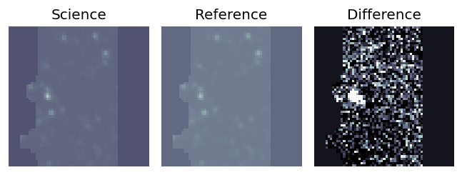
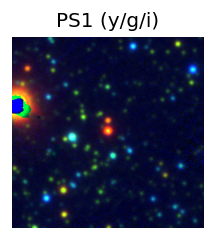
PS1: 1 source in 3 arcsec Closest: d = 0.25 arcsec photoz=0.01+/-0.16 peak abs mag = -21.60 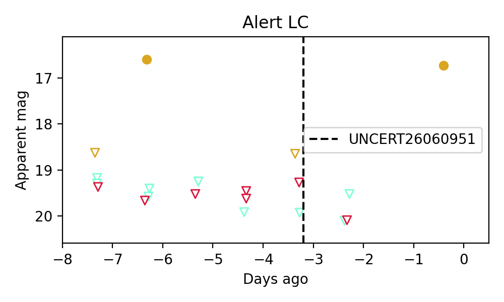
2. ZTF26abagkaa (FBOT?) [Back to Top] [Share] [Trigger Swift] [Fritz ] [Lasair ]RA, Dec: 259.76876, 56.36176 17h19m4.50s, 56d21m42.34sGalactic (l, b): 84.48777, 34.95839 ext(g-r) = 0.022peak abs mag = -21.61 LegacySurvey: 1 sources in 3 arcsec Closest: d = 0.68 arcsec, 9.9 deg (east of north) photoz=0.12 (68% bounds 0.09, 0.16), type=EXP peak abs mag = -19.48 (68% bounds -18.78, -20.12)
3. ZTF26abarcrv (FBOT?) [Back to Top] [Share] [Trigger Swift] [Fritz ] [Lasair ]RA, Dec: 275.07786, 77.79911 18h20m18.69s, 77d47m56.78sGalactic (l, b): 109.19915, 28.10906 ext(g-r) = 0.068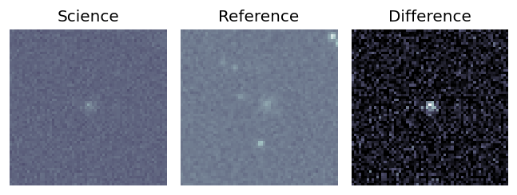
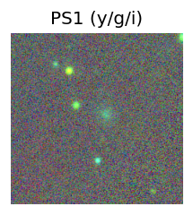
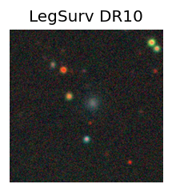
peak abs mag = -19.14 LegacySurvey: 1 sources in 3 arcsec Closest: d = 3.09 arcsec, 290.4 deg (east of north) photoz=0.18 (68% bounds 0.05, 0.43), type=REX peak abs mag = -20.58 (68% bounds -17.54, -22.74) 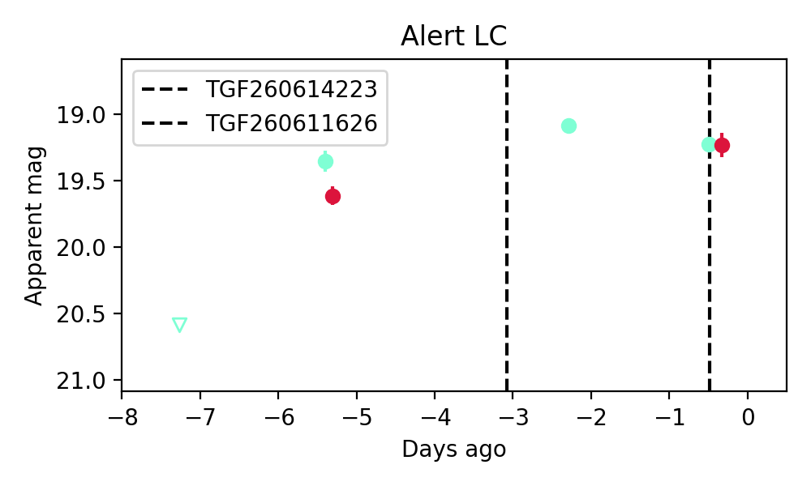
4. ZTF26abarrek (FBOT?) [Back to Top] [Share] [Trigger Swift] [Fritz ] [Lasair ]RA, Dec: 259.86739, -1.811 17h19m28.17s, -1d-48m-39.59sGalactic (l, b): 20.30349, 19.45394 ext(g-r) = 0.485PS1: 1 source in 3 arcsec Closest: d = 0.62 arcsec photoz=0.09+/-0.01 peak abs mag = -20.35 Consistent with synchrotron, g-r>0!
5. ZTF26abbbfzc (Afterglow?FBOT?) [Back to Top] [Share] [Trigger Swift] [Fritz ] [Lasair ]RA, Dec: 270.52158, -12.89836 18h 2m5.18s, -12d-53m-54.08sGalactic (l, b): 15.79412, 4.79469 ext(g-r) = 1.55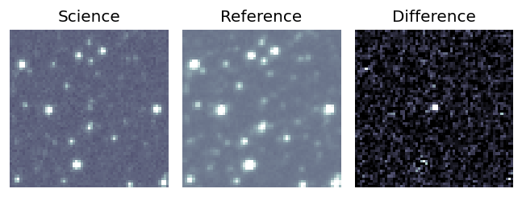
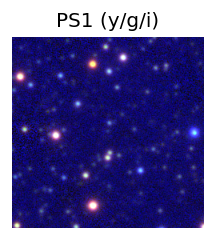
PS1: 1 source in 3 arcsec Closest: d = 0.22 arcsec photoz=0.04+/-0.32 peak abs mag = -20.89 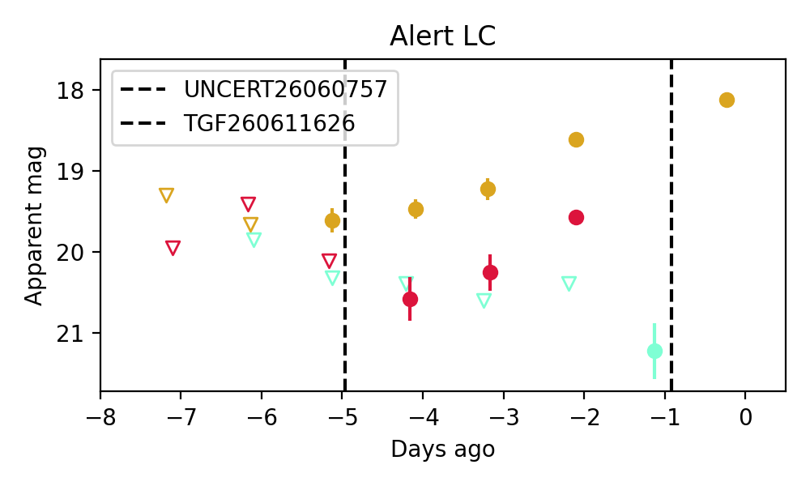
Consistent with synchrotron, g-r>0!
6. ZTF26abbhszj (FBOT?) [Back to Top] [Share] [Trigger Swift] [Fritz ] [Lasair ]RA, Dec: 243.28343, -6.1037 16h13m8.02s, -6d-6m-13.33sGalactic (l, b): 6.34971, 31.01849 ext(g-r) = 0.316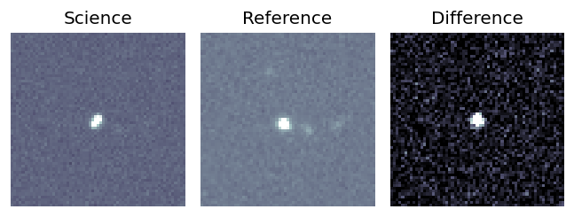
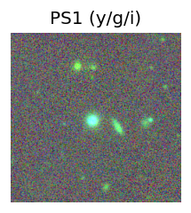
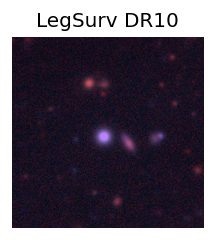
LegacySurvey: 1 sources in 3 arcsec Closest: d = 2.19 arcsec, 139.1 deg (east of north) photoz=0.11 (68% bounds 0.01, 0.48), type=PSF peak abs mag = -20.99 (68% bounds -16.36, -24.55) 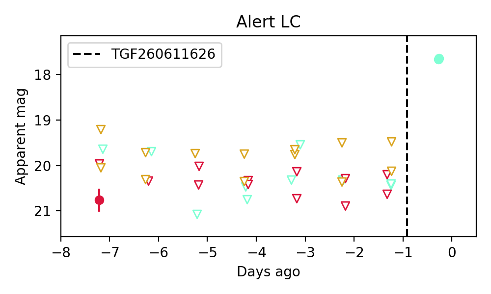
7. ZTF26abbiayi (FBOT?) [Back to Top] [Share] [Trigger Swift] [Fritz ] [Lasair ]RA, Dec: 260.87049, 8.65819 17h23m28.92s, 8d39m29.47sGalactic (l, b): 30.75728, 23.45838 ext(g-r) = 0.142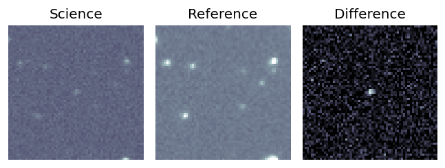
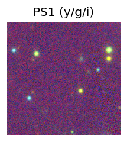
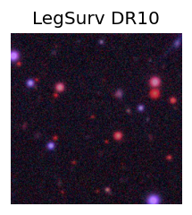
LegacySurvey: 1 sources in 3 arcsec Closest: d = 1.66 arcsec, 70.2 deg (east of north) photoz=0.79 (68% bounds 0.55, 1.06), type=PSF peak abs mag = -23.3 (68% bounds -22.32, -24.07) 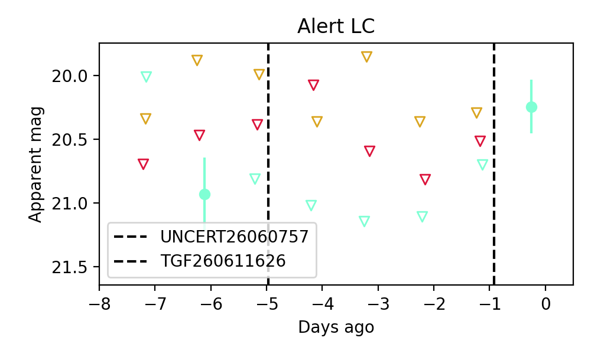
8. ZTF26abbiddx (FBOT?) [Back to Top] [Share] [Trigger Swift] [Fritz ] [Lasair ]RA, Dec: 262.89145, 12.68374 17h31m33.95s, 12d41m1.46sGalactic (l, b): 35.64785, 23.3677 ext(g-r) = 0.165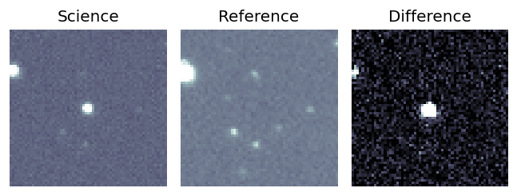
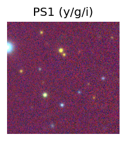
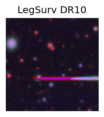
LegacySurvey: 1 sources in 3 arcsec Closest: d = 0.95 arcsec, 141.0 deg (east of north) photoz=0.87 (68% bounds 0.66, 1.46), type=PSF peak abs mag = -27.06 (68% bounds -26.33, -28.45) 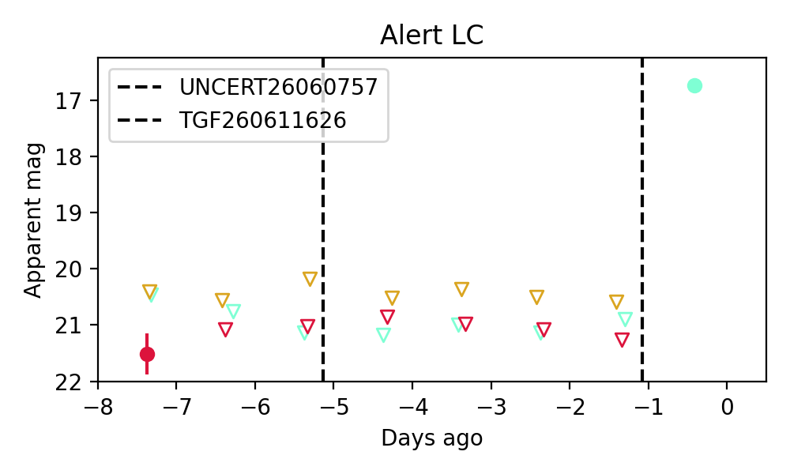
9. ZTF26abbidua (Afterglow?) [Back to Top] [Share] [Trigger Swift] [Fritz ] [Lasair ]RA, Dec: 256.24325, 10.89935 17h 4m58.38s, 10d53m57.66sGalactic (l, b): 30.82363, 28.53871 ext(g-r) = 0.082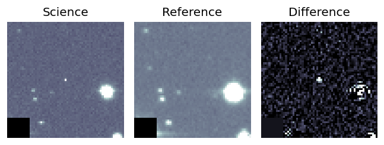
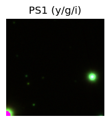
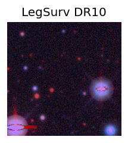
LegacySurvey: 1 sources in 3 arcsec Closest: d = 8.24 arcsec, 167.9 deg (east of north) photoz=1.15 (68% bounds 0.92, 1.35), type=REX peak abs mag = -25.44 (68% bounds -24.83, -25.87) 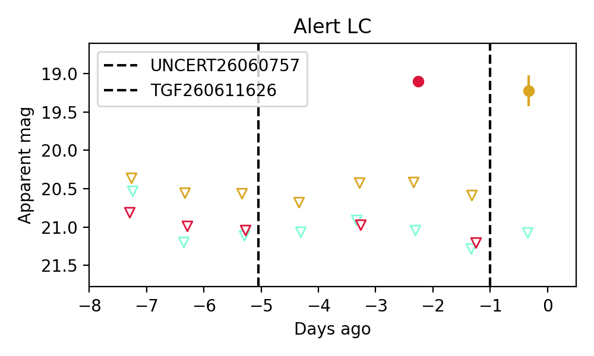
10. ZTF26abbieju (Afterglow?) [Back to Top] [Share] [Trigger Swift] [Fritz ] [Lasair ]RA, Dec: 247.82536, -6.15914 16h31m18.09s, -6d-9m-32.91sGalactic (l, b): 9.32746, 27.32508 ext(g-r) = 0.359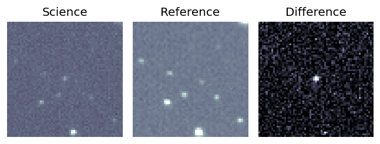
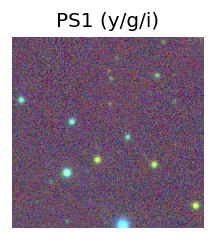
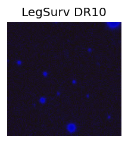
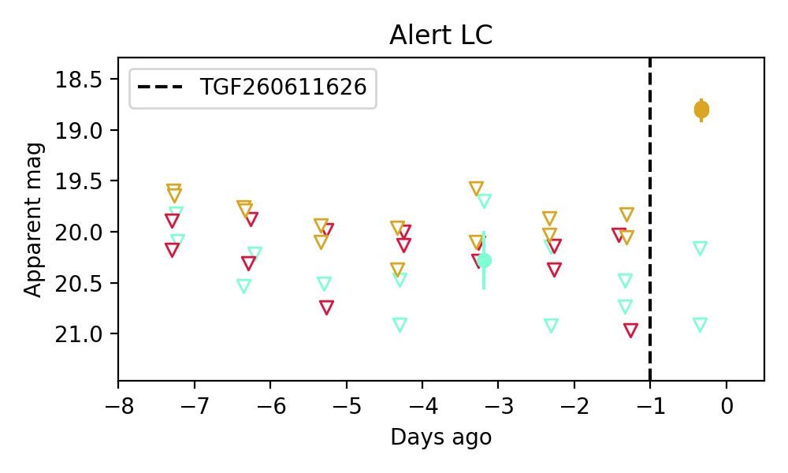
11. ZTF26abbifmi (Afterglow?) [Back to Top] [Share] [Trigger Swift] [Fritz ] [Lasair ]RA, Dec: 271.38955, 9.41936 18h 5m33.49s, 9d25m9.71sGalactic (l, b): 36.25893, 14.43119 ext(g-r) = 0.211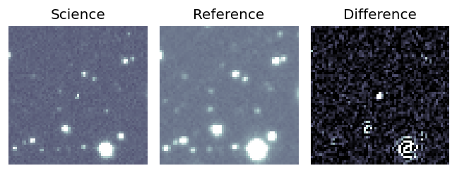
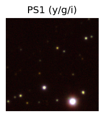
peak abs mag = -24.34 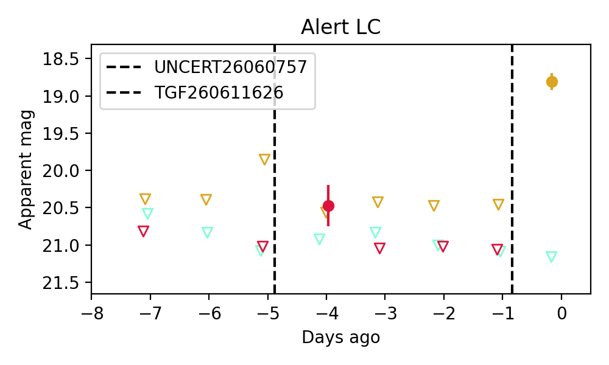
12. ZTF26abbifod (Afterglow?) [Back to Top] [Share] [Trigger Swift] [Fritz ] [Lasair ]RA, Dec: 269.6951, 4.29566 17h58m46.82s, 4d17m44.36sGalactic (l, b): 30.75596, 13.66685 ext(g-r) = 0.205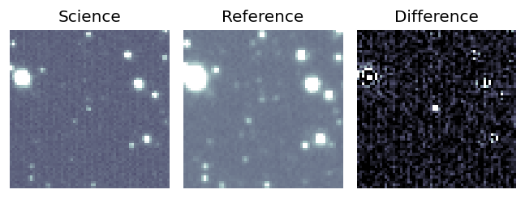
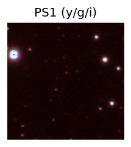
PS1: 1 source in 3 arcsec Closest: d = 3.69 arcsec photoz=0.67+/-0.83 peak abs mag = -24.38 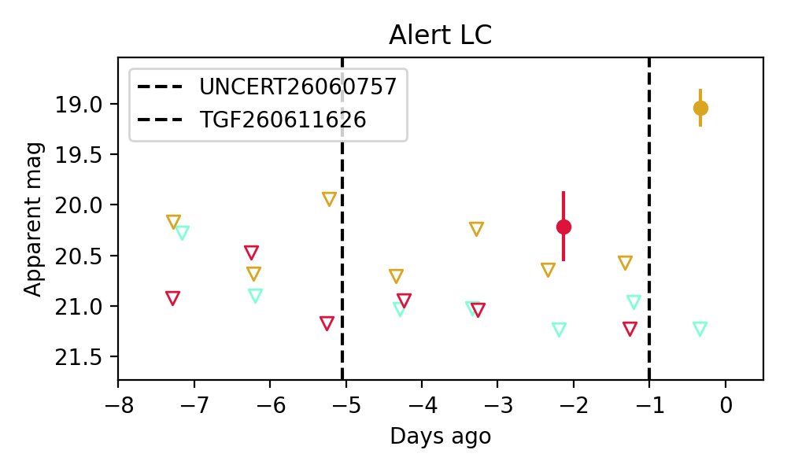
13. ZTF26abbikja (FBOT?) [Back to Top] [Share] [Trigger Swift] [Fritz ] [Lasair ]RA, Dec: 258.36777, -7.59436 17h13m28.26s, -7d-35m-39.71sGalactic (l, b): 14.25063, 17.78562 ext(g-r) = 0.838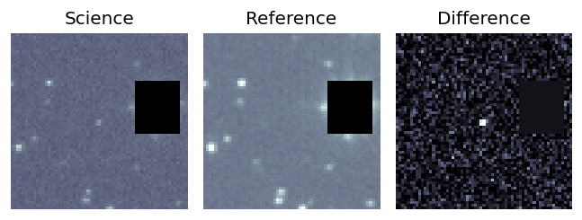
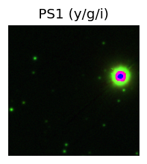
PS1: 1 source in 3 arcsec Closest: d = 6.14 arcsec photoz=1.16+/-0.14 peak abs mag = -26.45 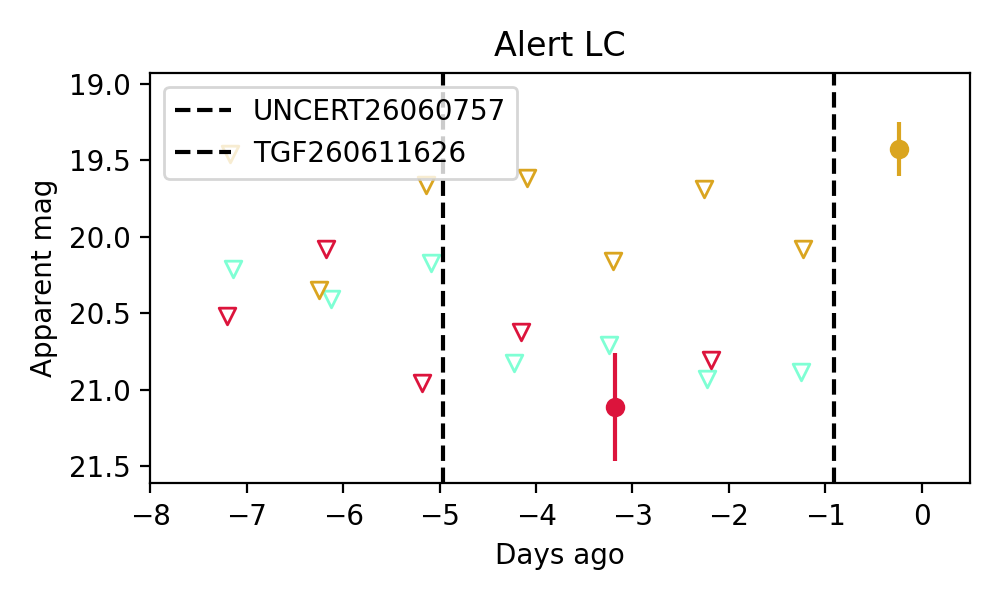
14. ZTF26abbitoe (FBOT?) [Back to Top] [Share] [Trigger Swift] [Fritz ] [Lasair ]RA, Dec: 258.37058, 24.71712 17h13m28.94s, 24d43m1.65sGalactic (l, b): 46.56141, 31.72081 ext(g-r) = 0.046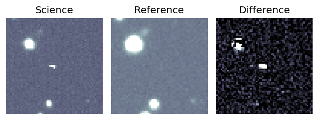
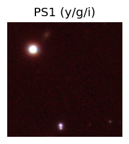
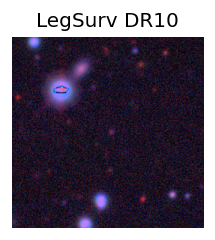
peak abs mag = -25.35 LegacySurvey: 1 sources in 3 arcsec Closest: d = 1.29 arcsec, 269.5 deg (east of north) photoz=1.0 (68% bounds 0.94, 1.1), type=REX peak abs mag = -25.57 (68% bounds -25.37, -25.81) 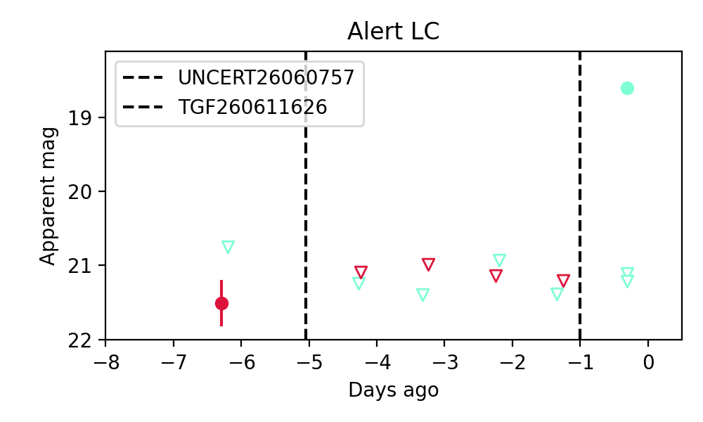
15. ZTF26abbizjp (FBOT?) [Back to Top] [Share] [Trigger Swift] [Fritz ] [Lasair ]RA, Dec: 258.84906, 25.7625 17h15m23.78s, 25d45m45.00sGalactic (l, b): 47.8859, 31.62334 ext(g-r) = 0.04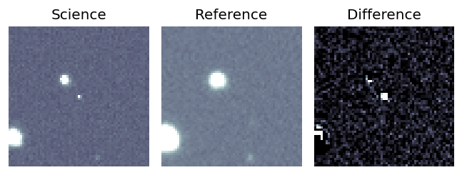
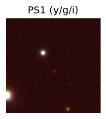
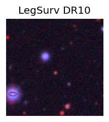
LegacySurvey: 1 sources in 3 arcsec Closest: d = 4.11 arcsec, 188.0 deg (east of north) photoz=0.21 (68% bounds 0.06, 0.31), type=PSF peak abs mag = -20.96 (68% bounds -17.96, -22.01) 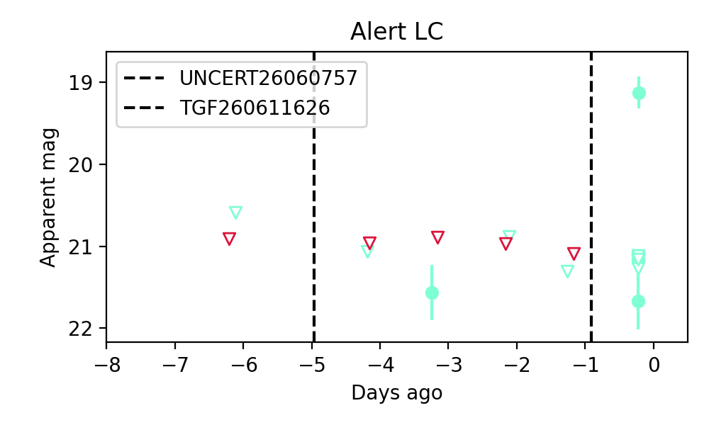
16. ZTF26abbjskw (Afterglow?) [Back to Top] [Share] [Trigger Swift] [Fritz ] [Lasair ]RA, Dec: 266.60291, -13.74897 17h46m24.70s, -13d-44m-56.28sGalactic (l, b): 13.14346, 7.67945 ext(g-r) = 0.679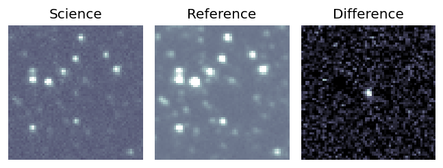
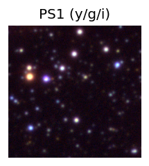
PS1: 1 source in 3 arcsec Closest: d = 3.90 arcsec photoz=0.56+/-0.08 peak abs mag = -25.26 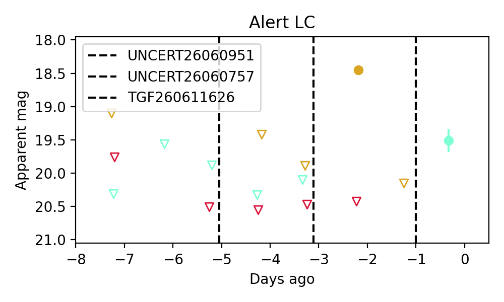
17. ZTF26abbklpq (FBOT?) [Back to Top] [Share] [Trigger Swift] [Fritz ] [Lasair ]RA, Dec: 329.00194, 32.52588 21h56m0.47s, 32d31m33.15sGalactic (l, b): 85.22815, -17.21198 ext(g-r) = 0.119PS1: 1 source in 3 arcsec Closest: d = 0.51 arcsec photoz=0.20+/-0.07 peak abs mag = -20.64 Consistent with synchrotron, g-r>0!